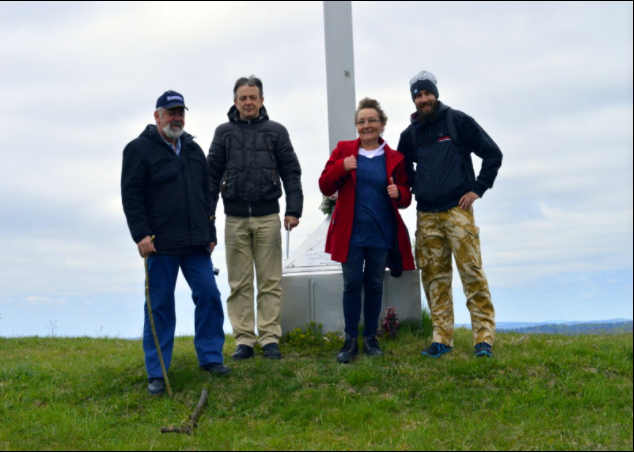
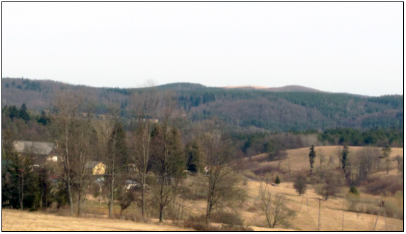

UWAGA !
Uprzejmie informujemy, iż z dniem dzisiejszym przenieśliśmy stronę internetową Kopysna (wymaga ona jeszcze aktualizacji i zmiany wyglądu) na inny, niestety płatny serwer. Nowa domena to: www.kopysno.pl. Zmienił się także adres mailowy (kopysno@data.pl). Poprzednie adresy będą aktualne do końca lutego 2018 r.
Z poważaniem,
Administrator
W oparciu o nowe dokumenty w dziale Informacje skorygowaliśmy i uzupełniliśmy zakładkę "Historia - Lata 1940-1947" (pkt 4, 6 i 7). Dodaliśmy do niej w części "Dokumenty do pobrania" plik zawierający informacje o Działalności UPA i WP w latach 1945-46 wg źródeł ukraińskich.
Bardzo dziękujemy Mariuszowi Jesionowskiemu za pomoc w tłumaczeniu tekstów.
W maju na cmentarzu złamał się drewniany krzyż z 1938 r. Dzięki staraniom i ofiarności osób z Tczewa, Słupska, Rybotycz oraz innym, w dniu 15 sierpnia 2017 r. postawiono i odnowiono krzyż, widoczny na poniższym zdjęciu.
W dniu 29 października 2017 r. w Kopysnie odbędzie się msza i ponowne poświęcenie krzyża na cmentarzu.
Informacje przekazał nam Mariusz Jesionowski, za które dziękujemy.

Na początku maja Kopysno odwiedziła rodzina Nienadowskich z Olsztyna i Pudłowca. Pozdrawiamy wszystkich serdecznie i oczekujemy kolejnej wizyty w naszych stronach.

7 maja 2017Uzupełniliśmy historię Kopysna związaną z Akcją "Wisła", poprawiliśmy załączniki w dziale Informacje i zakładce "Historia", umożliwiając do nich łatwiejszy dostęp i jesteśmy w trakcie uzupełnienia zakładki "Osoby" w dziale Galeria Fotografii.
Polecamy wspomnienia byłego mieszkańca Kopysna - Jana Krupy na stronie gminy Sztum - gmina.sztum.pl.
W planie mamy dwie wizyty w instytucjach posiadających dokumenty związane z Kopysnem.
Wracając z podróży zatrzymaliśmy się w miejscowości Łodzinka Górna, skąd ujrzeliśmy w oddali niezalesiony szczyt Kopystanki.

Pragniemy poinformować, iż internetowa strona Kopysna została dostrzeżona przez autorów publikacji "Digitalizacja, udostępnianie i upowszechnianie zasobów kultury w doświadczeniu twórców wybranych portali internetowych w Polsce", wyd. Małopolski Instytut Kultury (nck.pl, str.71). Autorzy zwrócili uwagę na nasz "Cmentarz", a dokładnie "fotografie grobów przodków".
Według informacji przekazanych nam przez Archiwum Państwowe w Przemyślu, nie wszystkie akta notariuszy w Dobromilu dot. m.in. mieszkańców Kopysna zostały udostępnione w wersji on-line i trudno przewidzieć, kiedy będzie można mieć do nich dostęp w sieci. Dotyczą one lat 1870-1877, 1884-1889 i 1919-1939.
Zajrzeliśmy do bazy danych o emigrantach przybywających do USA w latach 1879-1960 drogą morską, dostępnej na stronie fundacji The Statue of Liberty - Ellis Island. Znaleźliśmy w niej kilkunastu mieszkańców Kopysna i sporządziliśmy ich wykaz, który zamieściliśmy w zakładce "Historia - Dokumenty do pobrania" - Wykaz emigrantów do USA.
Zachęcamy wszystkich do poszukiwania swoich bliskich korzystając z wyszukiwarki na stronie fundacji - libertyellisfoundation.org. Chcemy jednocześnie dodać, iż baza danych nie jest doskonała. Brakuje w niej polskich znaków diakrytycznych i można spotkać błędy w pisowni imion, nazwisk oraz nazw miejscowości. Z bazy danych natomiast można dowiedzieć się kiedy i jakim statkiem emigranci przybyli do USA a niekiedy poznać bliższe szczegóły o nich samych, np. stan zdrowia, wzrost, kolor włosów i oczu itp.
Jeżeli znajdziecie kogoś ze swoich bliskich wśród emigrantów z Kopysna, prosimy o kontakt.
Otrzymaliśmy dziś kolejną smutną wiadomość. 5 lutego 2017 r. w Lubinie (woj. dolnośląskie) zmarła dawna mieszkanka Kopysna – Zofia Balul z domu Gierczak, córka Michała i Anny, ur. 12.07.1928 r. w Kopysnie.
O śmierci poinformowała nas wnuczka, pani Natalia.
Ze smutkiem przyjęliśmy wiadomość o śmierci Dariusza Hopa, prezesa Zarządu Oddziału PTTK im. dr Orłowicza w Przemyślu, założyciela Klubu Górskiego "Karpaty". W jednym z wpisów na naszej stronie Darek (Harnaś) stwierdził, że Kopystanka jest jego ulubioną górą, na której był kilkadziesiąt razy. Żółty szlak turystyczny od wzniesienia Suchy Obycz do Kopystanki zapewne też był jego pomysłem.
Cóż można w tej sytuacji powiedzieć ... musimy spotkać się na Kopystance kiedy przyjdzie na to czas, czas dla wszystkich, którym nie było dane dotrwać do końca tego systemu rzeczy.
W związku z interwencją osób zaniepokojonych stanem technicznym obiektu cerkwi i jej otoczenia (w tym cmentarza) w Kopysnie pragniemy wyjaśnić, iż zgodnie z naszą wiedzą:
- władającym działką Nr 70, na której znajdują się obiekty takie jak: cmentarz, cerkiew i dzwonnica, będące obiektami wpisanymi do rejestru zabytków, według ewidencji gruntów i budynków jest Skarb Państwa reprezentowany przez Starostę Powiatu Przemyskiego,
- użytkownikiem cerkwi według w/w ewidencji jest Parafia Rzymsko-katolicka w Rybotyczach,
- zarządcą cmentarza komunalnego jest Gmina Fredropol, co wynika z odrębnych przepisów prawa.
Jeżeli powyższe informacje nie są zgodne z prawdą lub uległy zmianie po dacie podanej na stronie, prosimy o kontakt.
Na naszej stronie, w zakładce Historia zamieściliśmy uzupełniające informacje dotyczące dwóch ważnych wydarzeń związanych z deportacją mieszkańców Kopysna, które miały miejsce w 1945 i 1947 r., i które dotyczą aktów prawnych będących podstawą działania ówczesnych władz.
Przeglądając akta (tysiące stron) pozostałych c.k. notariuszy w Dobromilu, dostępne na stronie Archiwum Państwowego w Przemyślu, natknęliśmy się na kolejne dokumenty dotyczące mieszkańców Kopysna. Zebraliśmy je wszystkie i dla ułatwienia ich wyszukiwania w Archiwum wkrótce zamieścimy ich pełny wykaz w zakładce "Historia - Dokumenty do pobrania" w załączniku Akta notarialne c.k. notariuszy w Dobromilu.
Ponadto, dla ułatwienia przeglądania ksiąg metrykalnych Greckokatolickiego Biskupstwa w Przemyślu - parafii Rybotycze z filią Kopysno (dekanat Dobromil) obejmujących lata 1784-1869 (skany.przemysl.ap.gov.pl) informujemy, że dane dot. mieszkańców Kopysna znajdują się w części objętej skanami od 146 do 164 i od 179 do 186.
8 stycznia 2017